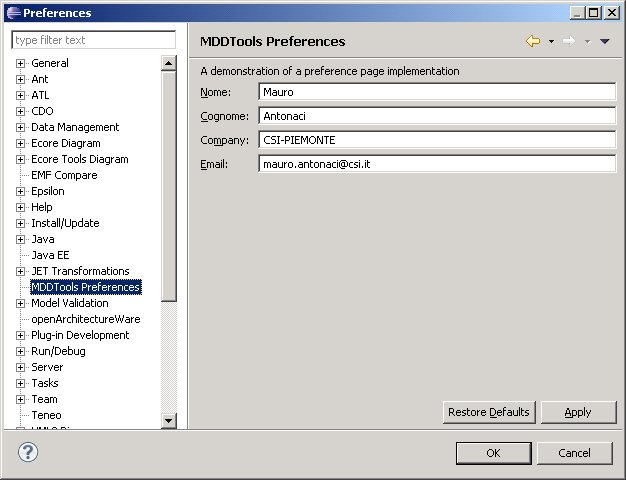

La suite di strumenti MDD, a partire dalle versioni 1.5.0 di guigen , 1.1.0 di servicegen, 1.0.0 di datagen, prevede un meccanismo di tracking dell'utilizzo degli strumenti, finalizzato a gestire in maniera efficace l'evoluzione dei tool stessi nei confronti dei suoi utilizzatori.
A partire dalle versioni sopracitate, infatti, il plugin mddtools, già deputato a distribuire la documentazione complessiva della suite di strumenti, possiede questa ulteriore funzionalità automaticamente attivata all'utilizzo dei vari plugin di modellazione (guigen/servicegen/datagen).
Alcune conseguenze di ciò:
Tali informazioni sono utilizzate per raccogliere, su un database centrale, informazioni relative a chi sta utilizzando quale versione di strumento. La raccolta dati avviene mediante invio (via http) delle informazioni citate, più informazioni identificative dello strumento (codice/versione) ad un collettore centrale. Poichè la continuità di servizio degli strumenti è prioritaria rispetto alle esigenze statistiche un eventuale malfunzionamento dell'invio dovuto a problemi contingenti (es. di rete) non è bloccante per l'utilizzatore.
I possibili utilizzi delle informazioni collezionate sono tutti orientati ad una gestione più efficace dell'evoluzione del prodotto e al supporto nell'utilizzo, ad esempio:
La configurazione iniziale del plugin mddtools deve essere effettuata una sola volta per postazione di lavoro accedendo all'apposita form da eclipse, mediante il menu:
windows --> preferences e seleizonando sulla sinistra il nodo "MDDTools Preferences":

Al termine dell'impostazione è necessario riavviare eclipse. Solo in seguito i plugin effettivi di modellazione sono utilizzabili.
Le impostazioni sono conservate nella home directory dell'utente e sono pertanto condivise da tutte le installazioni di eclipse su quella postazione.